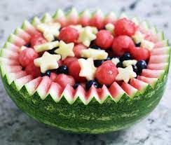
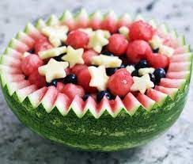

Meal Ideas To Get You Started

There are many foods that are naturally gluten-free. Fruits, vegetables, dairy, nuts, meat, and sugars are all naturally gluten-free. The only reason foods obtain gluten is because sauces, seasonings, items and toppings added to food recipes contains gluten. This makes it a bit harder to find things ready made to eat. Lets go over some ideas that can help you make meals that are gluten-free.

Snacks are the fastest and easiest way to get nutrition into the body. Some gluten-free snacks include corn chips, yogurt, cheese curds or slices, plain or salted nuts, plain flavor ice cream, veggie and fruit slices, and products labeled gluten-free for just a few ideas.
 

There are many hot and cold meals that can be made that are gluten-free. Baked potatoes with vaious toppings is one of them. A few other meal ideas are: baked meats with a side of green beans and sour cream potatoes with cheese; eggs boiled, fried, or scrambled; rice topped, mixed, or as a side to a dish; cereal labelled gluten-free; homemade potato salad, chicken salad, and orther types of salads; and other recipes.
There are many websites that have recipes and other ideas to create gluten-free meals. Just search gluten-free meal ideas and a whole list of sites will pop up for you to look at and see what you'd like to try.